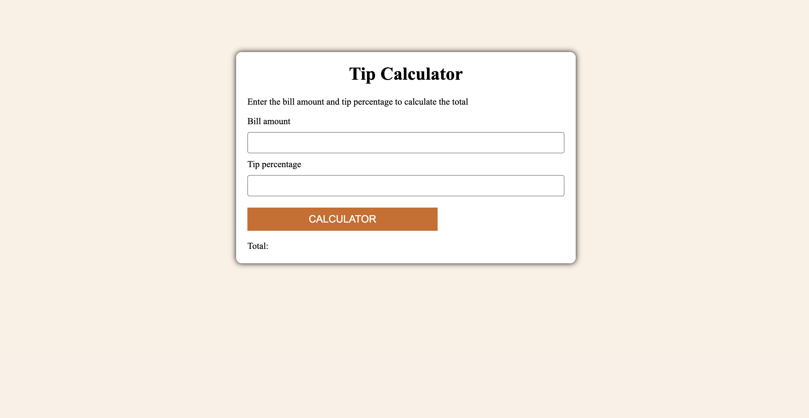
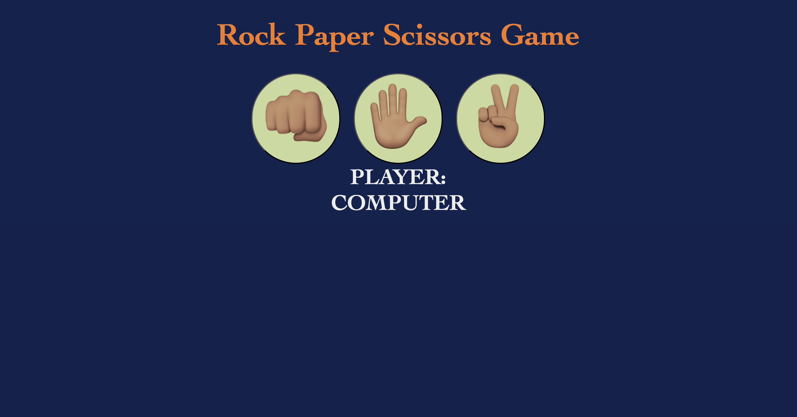

I am passionate about building user focused applications and exploring how artificial intelligence can make digital products smarter and more intuitive. With a growing foundation in front-end and AI driven development, I enjoy turning ideas into functional, visually appealing solutions.
I am a motivated and analytical junior software engineer with a background in Psychology, which has given me a deep understanding of human behaviour decision-making, and user experience. This foundation shapes how I approach design and development- ensuring every digital product I create is intuitive, engaging, and user-focused.
Alongside my technical growth, I have expertise into digital marketing, allowing me to merge data-driven insights with creative design and development. I am currently building my proficiency in modern web and app development, using technologies such as HTML5, CSS3, JavaScript, and continously exploring AI integration to enhance interactivity through intelligent features like chatbots and smart automation.
I am passionate about developing products that not only look good but also deliver meaningful, seamless experiences. With my interdisciplinary background, I bring a balance of technical capability, user empathy, and strategic thinking- qualities I am eager to apply in a dynamic, growth-orientated tech environment.
Created and designed digital products like websites, games using HTML5 CSS3 and JavaScript
Created, supervised and designed posters for workshop activities like cooking classes, art projects with residents.
Created and managed person-tailored treatment plan for service users struggling with drug or alcohol addiction.
Created and designed a SharePoint page to improve the communication within the technology team in Elsevier.
Facilitated group games with patients which helped to promote peace and unity among patients and elevate their mood.
Successfully delivered administrative duties in the ward which helped to reduce the team’s workload.
JavaScript
HTML5
C#
CSS
MySQL

A simple tip calculator created using:
HTML5, CSS3, JavaScript

A fun rock paper scissors game created using:
HTML5, CSS3, JavaScript
I design and develop modern, responsive, and user-friendly websites that combine clean aesthetics with functional performance. My approach focuses on creating unique digital experiences tailored to each client's goals, ensuring accessibility, speed, and seamless user interaction. With a solid foundation in HTML5, CSS3, and JavaScript, I build intuitive interfaces that reflect both creativity and technical precision.
I develop intuitive and engaging applications that prioritize user experience, perforamnce, and scalability. My focus is on building efficient, responsive, and visually appealing apps that solve real-world problems. I am continously expanding my skills to integrate AI-powered features- such as intelligent chatbots and automation tools into applications and websites, enhancing functionality and creating smarter user interactions.